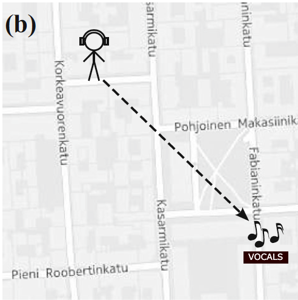

Good job! This time, you will once again follow the singer's voice. However, unlike the previous two tasks, there will be no checkpoints. Instead, the vocals will be coming directly from the destination, so you will have to find your own way there! (This means you may run into a dead end if you are unlucky but don't worry, you can always go back and find another way). The voice will sound distant at first (like a concert playing in another part of town), but as you approach your target, it will begin to sound closer to you to indicate you are on the right track.
To get an idea of what this sounds like, you can try out the buttons below (press to play/pause).
Once again you will have unlimited time but if you still find the task too difficult, you may press the "I give up" button and you will be guided by a map instead.
Press "Start" whenever you are ready to proceed.